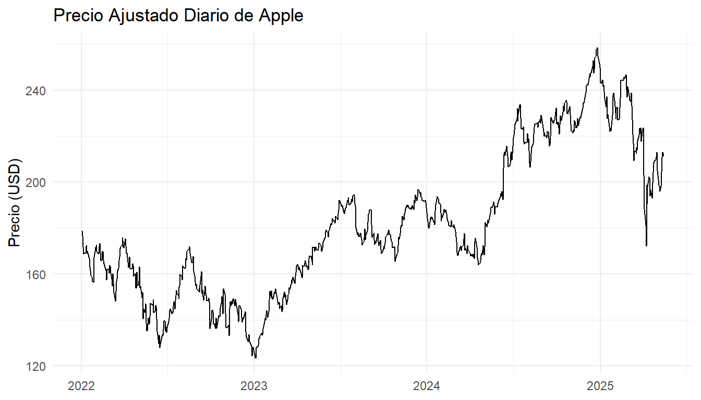
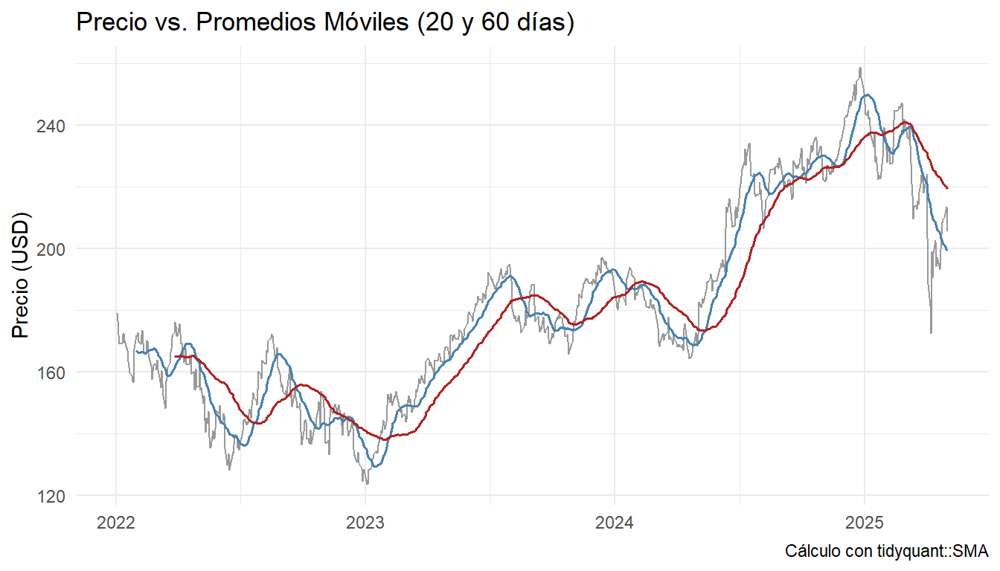
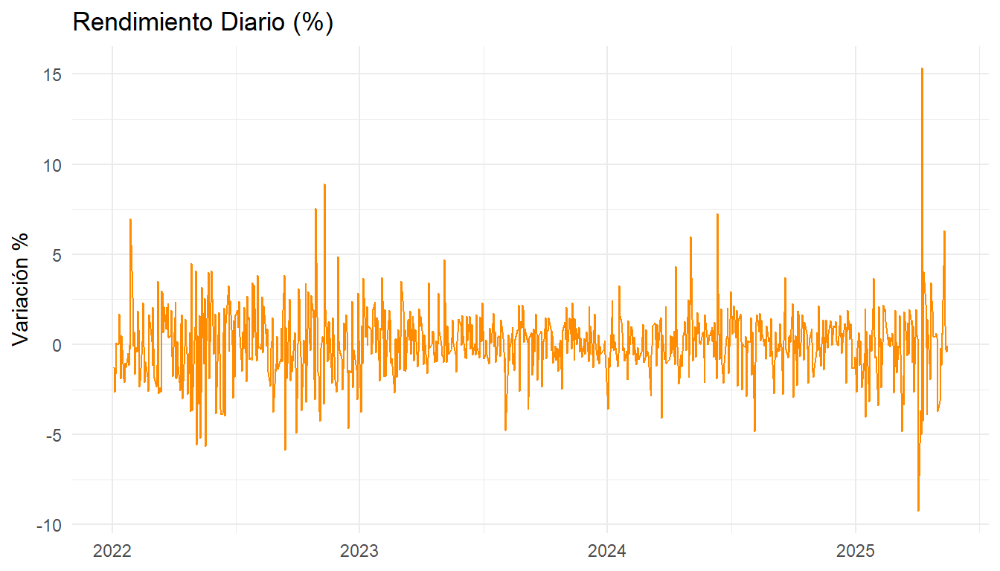
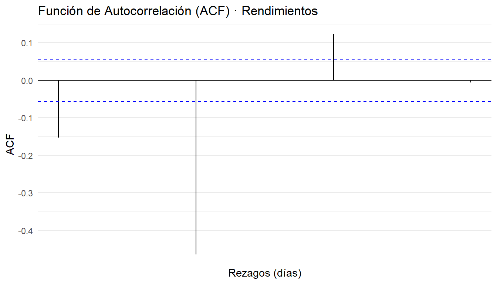
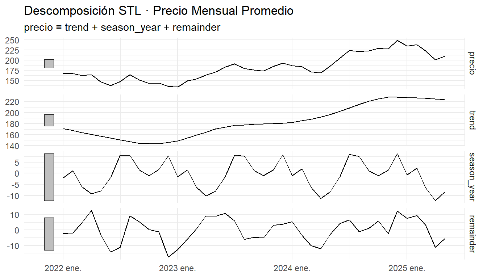
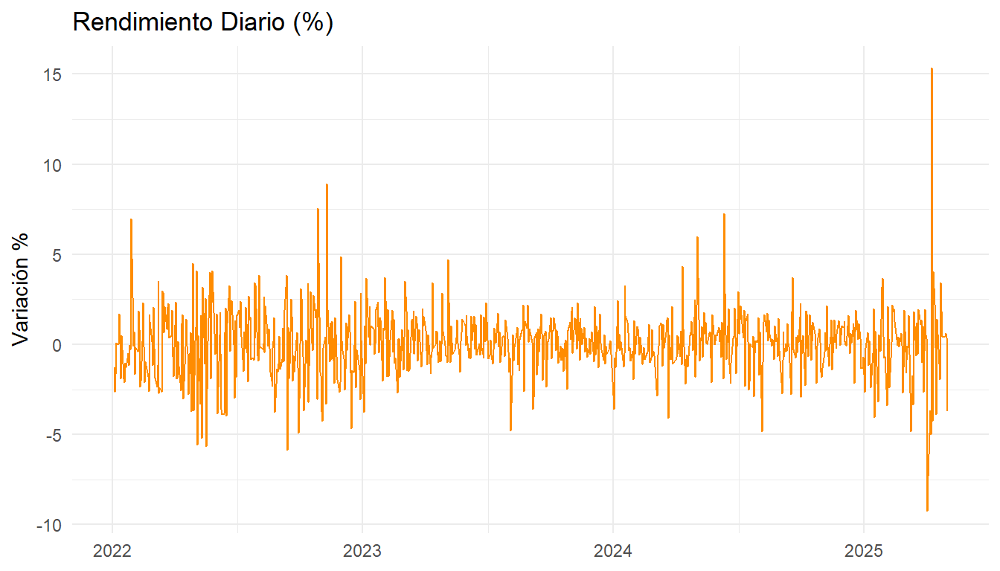
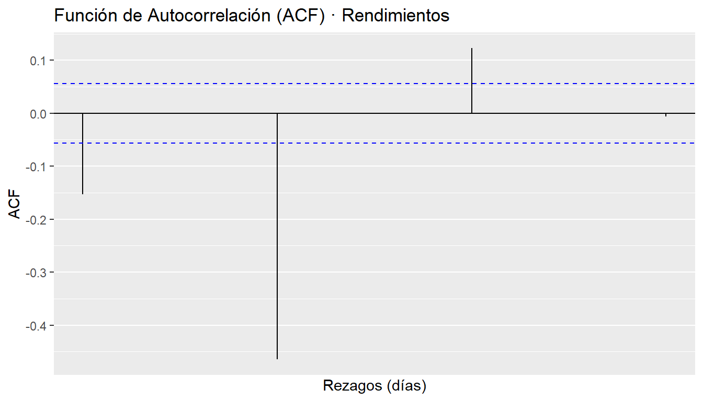
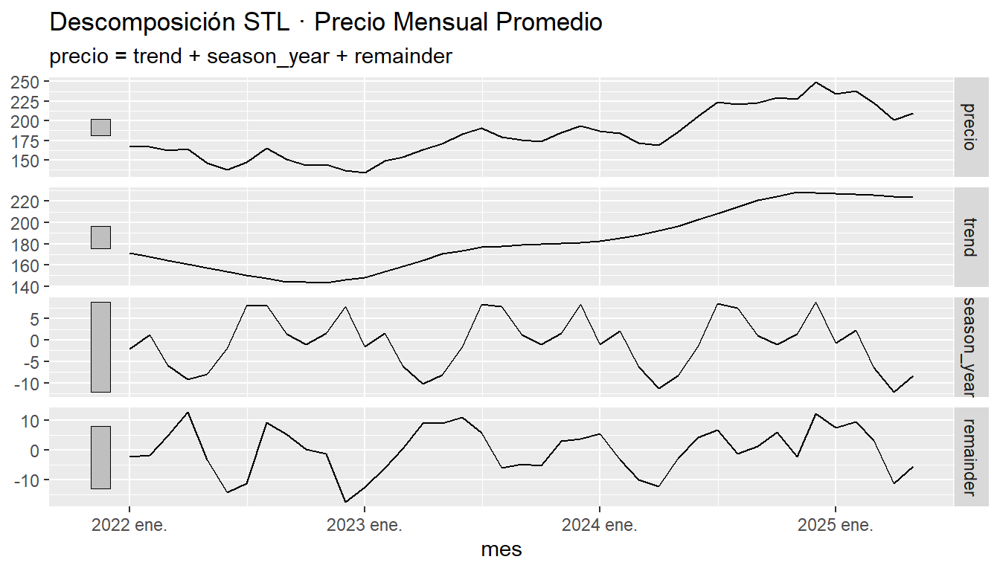

Chapter 6 Patrones temporales en precios de acciones
A lo largo de esta unidad analizaremos cómo descargar, preparar y visualizar series temporales de precios de acciones, calcular indicadores básicos (medias móviles y rendimientos), evaluar la autocorrelación y descomponer la serie en sus componentes de tendencia, estacionalidad y ruido.
6.1 Configuración inicial
En esta sección definimos las opciones globales de knitr para controlar la salida de mensajes, advertencias y la apariencia de los gráficos. Además, cargamos todas las librerías necesarias para el análisis.
knitr::opts_chunk$set(
echo = TRUE, # mostrar código
message = FALSE,
warning = FALSE,
fig.align = "center",
fig.width = 7,
fig.height = 4
)
library(tidyquant) # facilita la descarga y graficación
library(dplyr)
library(ggplot2)
library(tsibble) # manipulación de series
library(feasts) # descomposición y ACF
library(quantmod)
library(zoo)6.2 Definición de parámetros y descarga de datos
Aquí especificamos el símbolo bursátil (symbol) y el rango de fechas (fecha_ini a fecha_fin). Luego usamos quantmod::getSymbols() para traer los precios ajustados de cierre desde Yahoo Finance.
6.3 Preparación y limpieza de datos
Convertimos el objeto xts en un data.frame, renombramos las columnas para facilitar su uso y seleccionamos solo la fecha y el precio ajustado.
# De xts a data.frame con columna 'fecha'
stock_df <- data.frame(
fecha = zoo::index(stock_xts),
coredata(stock_xts),
row.names = NULL
)
# Renombrar columnas para mayor claridad
colnames(stock_df) <- c(
"fecha",
"open", "high", "low", "close", "volume", "adjusted"
)
# Seleccionar solo fecha y precio ajustado
precio_df <- stock_df %>%
select(
fecha,
precio = adjusted
)
# Mostrar las primeras filas
head(precio_df)## fecha precio
## 1 2022-01-03 178.8799
## 2 2022-01-04 176.6096
## 3 2022-01-05 171.9118
## 4 2022-01-06 169.0421
## 5 2022-01-07 169.2091
## 6 2022-01-10 169.22886.4 Visualización del precio ajustado diario
En este paso creamos un gráfico de línea para observar la evolución diaria del precio ajustado de la acción.
ggplot(precio_df, aes(x = fecha, y = precio)) +
geom_line() +
labs(
title = "Precio Ajustado Diario de Apple",
x = NULL,
y = "Precio (USD)"
) +
theme_minimal()
El gráfico muestra la evolución diaria del precio ajustado de la acción de Apple (AAPL) desde comienzos de 2022 hasta mediados de 2025. A grandes rasgos podemos distinguir tres fases:
Fase bajista (ene 2022–dic 2022):
A inicios de 2022 el precio rondaba los USD 160–170, pero durante el año se produce una tendencia general a la baja.
Hacia finales de 2022 alcanza mínimos alrededor de USD 120, reflejando probablemente el impacto de la subida de tipos de interés y la aversión al riesgo en el sector tecnológico.
Recuperación y consolidación (ene 2023–jun 2024):
A partir de enero de 2023 el precio inicia un rebote sostenido, superando los USD 150 ya en la primera mitad del año.
Entre mediados de 2023 y mitad de 2024 se mueve en un rango aproximadamente entre USD 170 y USD 200, señal de una consolidación tras la fuerte caída previa.
Rally alcista y corrección reciente (jul 2024–2025):
Desde mediados de 2024 el precio rompe la resistencia en USD 200 y se dispara hasta tocar picos próximos a USD 250 a comienzos de 2025, probablemente animado por resultados financieros sólidos y expectativas de crecimiento.
Posteriormente se observa una corrección, con el precio retrocediendo hacia la zona de USD 200–220, un nivel que podría actuar ahora como soporte.
En conjunto, el gráfico evidencia (a) alta volatilidad intradía, (b) un claro cambio de tendencia de bajista a alcista a inicios de 2023, y (c) zonas de soporte/resistencia alrededor de USD 120–130, USD 170–200 y USD 240–250. Este comportamiento es consistente con ciclos de mercado impulsados por datos macroeconómicos, resultados corporativos y sentimiento sobre el crecimiento tecnológico.
6.5 Cálculo y visualización de medias móviles
Calculamos dos medias móviles simples (20 y 60 días) para suavizar la serie y captar posibles tendencias de corto y mediano plazo. Luego las graficamos junto con el precio original.
precio_df <- precio_df %>%
mutate(
sma_20 = SMA(precio, n = 20),
sma_60 = SMA(precio, n = 60)
)
ggplot(precio_df, aes(x = fecha)) +
geom_line(aes(y = precio), colour = "grey60") +
geom_line(aes(y = sma_20), colour = "steelblue", size = 0.7) +
geom_line(aes(y = sma_60), colour = "firebrick", size = 0.7) +
labs(
title = "Precio vs. Promedios Móviles (20 y 60 días)",
x = NULL,
y = "Precio (USD)",
caption = "Cálculo con tidyquant::SMA"
) +
theme_minimal()
El gráfico superpone el precio diario de Apple (línea gris) con dos medias móviles simples: la de 20 días (línea azul) y la de 60 días (línea roja). A continuación algunos puntos clave de interpretación:
Suavizado y tendencia
La SMA de 20 días reacciona con menor retraso a los cambios de precio, reflejando con más fidelidad las oscilaciones de corto plazo.
La SMA de 60 días, al promediar un periodo más largo, muestra la tendencia de fondo con menos ruido.
Fases de mercado y cruces
Bajista (2022): durante gran parte de 2022 la SMA-20 (azul) se mantiene por debajo de la SMA-60 (roja), confirmando un sesgo bajista.
Golden cross (primer trimestre 2023): el cruce alcista de la SMA-20 por encima de la SMA-60 a principios de 2023 marcó un cambio de impulso a favor de los compradores. Tras ese cruce, el precio encuentra soporte en ambas medias y arranca la recuperación.
Consolidación (mediados de 2023–2024): las dos medias se aproximan y se entrecruzan varias veces, señal de un rango lateral con fases alternadas de ventaja para alcistas y bajistas.
Nuevo rally (finales de 2024): vuelve a formarse un golden cross antes de que el precio alcance los máximos cerca de USD 250. La SMA-20 se separa de la SMA-60, reforzando la fuerza alcista.
Death cross reciente (2025):¨ la SMA-20 corta a la baja la SMA-60 después del pico, indicando un posible cambio de impulso hacia una fase correctiva.
Señales de trading y confirmaciones
Un cruce alcista (SMA-20 > SMA-60) suele interpretarse como señal de compra, especialmente si coincide con ruptura de resistencias en el precio.
Un cruce bajista (SMA-20 < SMA-60) se toma como señal de venta o cautela, más sólida si acompaña caídas por debajo de soportes técnicos.
Limitaciones
Las medias móviles introducen retraso (“lag”): reaccionan después de que el precio ya ha comenzado a moverse.
En mercados muy volátiles pueden generar señales falsas cuando las medias se cruzan con frecuencia.
6.6 Cálculo de rendimientos diarios y ACF
Primero convertimos el data.frame a un tsibble para aprovechar las funciones de feasts. Calculamos el rendimiento diario en porcentaje, rellenamos posibles huecos implícitos y, por último, analizamos la autocorrelación de esos rendimientos.
precio_ts <- precio_df %>%
as_tsibble(index = fecha) %>%
mutate(
ret_diario = (precio / lag(precio) - 1) * 100
)
# Rellenar huecos para evitar errores en ACF
precio_ts_filled <- precio_ts %>%
fill_gaps()
ggplot(precio_ts, aes(x = fecha, y = ret_diario)) +
geom_line(colour = "darkorange") +
labs(
title = "Rendimiento Diario (%)",
x = NULL,
y = "Variación %"
) +
theme_minimal()
precio_ts_filled %>%
ACF(ret_diario, lag_max = 30) %>%
autoplot() +
labs(
title = "Función de Autocorrelación (ACF) · Rendimientos",
x = "Rezagos (días)",
y = "ACF"
) +
theme_minimal()
El primer gráfico muestra la serie de rendimientos diarios (%) de Apple entre 2022 y mediados de 2025:
Media cercana a cero: la nube de puntos (línea continua) oscila alrededor de 0 %, lo cual es típico en rendimientos de activos cuyo valor esperado diario es casi nulo.
Volatilidad variable: se aprecian periodos de baja dispersión (p. ej. gran parte de 2024) y episodios de alta volatilidad (fines de 2022, principios de 2023 y otra vez en 2025), donde los retornos superan ±5 % en un solo día. Estos “spikes” coinciden probablemente con anuncios de resultados trimestrales o noticias macro.
Clusters de volatilidad: los picos tienden a agruparse, indicando que tras un día muy volátil suele haber más días de alta volatilidad, y viceversa.
El segundo gráfico es la Función de Autocorrelación (ACF) de los rendimientos (hasta 30 rezagos):
Rezago 1: autocorrelación negativa significativa El coeficiente en el rezago 1 aparece por debajo de la banda de significancia (aprox. –0.10), lo que sugiere un ligero efecto de reversión inmediata: un día de ganancia tiende a ir seguido, en promedio, por un pequeño retroceso al día siguiente.
Un rezago positivo aislado Se observa un único bar por encima de la banda superior en un rezago medio (p. ej. alrededor de 15–20 días), lo que podría apuntar a una débil pauta de retorno alcista mensual, aunque este efecto es muy débil y aislado.
Ausencia de autocorrelaciones consistentes Más allá de esos dos rezagos, todos los demás coeficientes caen dentro de las bandas de confianza, indicando que los rendimientos diarios, salvo esas dos excepciones, se comportan esencialmente como una serie sin memoria (compatible con la hipótesis de mercados eficientes en su forma débil).
En conjunto, estos gráficos resaltan que los retornos de Apple presentan volatilidad heterogénea y muy poca dependencia temporal, salvo un ligero sesgo de reversión intradía y una señal puntual de autocorrelación mensual.
6.7 Estacionalidad y descomposición STL
Agrupamos la serie por mes (usando el promedio mensual) y aplicamos un modelo STL para extraer las componentes de tendencia, estacionalidad y residuos.
# Promedio mensual
precio_mens <- precio_ts %>%
index_by(mes = ~ yearmonth(.)) %>%
summarise(precio = mean(precio, na.rm = TRUE))
# Descomposición STL con ventana de 13 meses
stl_descomp <- precio_mens %>%
model(STL(precio ~ trend(window = 13)))
# Graficar componentes
components(stl_descomp) %>%
autoplot() +
labs(
title = "Descomposición STL · Precio Mensual Promedio",
x = NULL
) +
theme_minimal()
En este gráfico vemos la descomposición STL de la serie de precio mensual promedio de Apple en tres componentes:
Serie original (precio)
Panel superior: muestra el promedio mensual del precio ajustado. Se aprecia claramente la misma dinámica que en los gráficos diarios, pero suavizada al promediar por mes: un descenso durante 2022, consolidación en 2023, y un fuerte ascenso desde mediados de 2024 hasta principios de 2025, con una leve corrección al final.
Tendencia (trend)
Segundo panel: extrae la “línea de fondo” de largo plazo. Aquí la tendencia es casi plana durante 2022, comienza a subir de forma continua a partir de comienzos de 2023 y acelera entre mediados de 2024 y principios de 2025, alcanzando un nivel cercano a 230 USD. Esta componente confirma el cambio de sesgo de mercado de neutro/bajista a fuertemente alcista.
Estacionalidad anual (season_year)
Tercer panel: muestra el patrón estacional que se repite cada año. La amplitud es de unos ±8–10 USD alrededor de la tendencia:
Aparece un pico positivo en torno al primer trimestre (posiblemente enero–marzo),
Seguido de un descenso por debajo de cero hacia verano,
Otro repunte moderado hacia el último tramo del año.
Esto indica que, sin importar la tendencia alcista de fondo, hay meses que tienden a estar sistemáticamente por encima (picos) o por debajo (valles) de lo que marca la tendencia.
Residuales (remainder)
Panel inferior: recoge las oscilaciones irregulares no explicadas por la tendencia ni la estacionalidad. Se observa que, salvo algunos “outliers” (picos muy altos o muy bajos), la mayoría de los residuos fluctúa dentro de ±5 USD, lo que sugiere que el modelo STL captura bien las dos componentes principales y deja poca varianza sin explicar.
Conclusión:
La serie tiene una tendencia alcista clara desde 2023.
Existe un patrón estacional anual de amplitud moderada, con máximos en el primer trimestre y mínimos en verano.
Los residuales son relativamente pequeños, lo que indica que la evolución de los precios mensuales se explica en gran medida por la combinación de estos dos factores.
knitr::opts_chunk$set(
echo = TRUE, # mostrar código
message = FALSE,
warning = FALSE,
fig.align = "center",
fig.width = 7,
fig.height = 4
)
library(tidyquant) # facilita la descarga y graficación
library(dplyr)
library(ggplot2)
library(tsibble) # manipulación de series
library(feasts) # descomposición y ACF
library(quantmod)
library(zoo)
symbol <- "AAPL"
fecha_ini <- as.Date("2022-01-01")
fecha_fin <- Sys.Date()
# 1) Descarga la serie como xts directamente
stock_xts <- getSymbols(symbol,
src = "yahoo",
from = fecha_ini,
to = fecha_fin,
auto.assign = FALSE,
warnings = FALSE)
# 2) Crea un data.frame con fecha + columnas numéricas
stock_df <- data.frame(
fecha = zoo::index(stock_xts),
coredata(stock_xts),
row.names = NULL
)
# 3) Renombra columnas genéricas (suponiendo que symbol="AAPL")
colnames(stock_df) <- c(
"fecha",
"open", "high", "low", "close", "volume", "adjusted"
)
# 4) Selecciona sólo fecha y precio ajustado
precio_df <- stock_df %>%
select(fecha, precio = adjusted)
# 5) Vista previa
head(precio_df)
# 6) Vista previa del gráfico de precio ajustado
ggplot(precio_df, aes(fecha, precio)) +
geom_line() +
labs(title = "Precio Ajustado Diario de Apple",
x = NULL,
y = "Precio (COP)") +
theme_minimal()# 7) Promedios móviles (SMA) Se calculan medias móviles simples de 20 y 60 días (aprox. 1 mes y 3 meses bursátiles).
precio_df <- precio_df %>%
mutate(
sma_20 = SMA(precio, n = 20),
sma_60 = SMA(precio, n = 60)
)
ggplot(precio_df, aes(fecha)) +
geom_line(aes(y = precio), colour = "grey60") +
geom_line(aes(y = sma_20), colour = "steelblue", size = 0.7) +
geom_line(aes(y = sma_60), colour = "firebrick", size = 0.7) +
labs(title = "Precio vs. Promedios Móviles (20 y 60 días)",
y = "Precio (COP)", x = NULL,
caption = "Cálculo propio con tidyquant::SMA") +
theme_minimal()
# 8) Rezagos y autocorrelación
precio_ts <- precio_df %>% as_tsibble(index = fecha)
# Rezago de 1 día para calcular rendimientos diarios
precio_ts <- precio_ts %>%
mutate(ret_diario = (precio / lag(precio) - 1) * 100)
ggplot(precio_ts, aes(fecha, ret_diario)) +
geom_line(colour = "darkorange") +
labs(title = "Rendimiento Diario (%)",
y = "Variación %", x = NULL) +
theme_minimal()
library(tsibble)
library(feasts)
# precio_ts es tu tsibble original con fecha y precio
precio_ts_filled <- precio_ts %>%
fill_gaps()
# Ahora sí calculamos la ACF sobre ret_diario
precio_ts_filled %>%
ACF(ret_diario, lag_max = 30) %>%
autoplot() +
labs(
title = "Función de Autocorrelación (ACF) · Rendimientos",
y = "ACF",
x = "Rezagos (días)"
)
# 9) Estacionalidad y descomposición
precio_mens <- precio_ts %>%
index_by(mes = ~ yearmonth(.)) %>%
summarise(precio = mean(precio))
stl_descomp <- precio_mens %>%
model(STL(precio ~ trend(window = 13))) # ventana de 13 meses
components(stl_descomp) %>%
autoplot() +
labs(title = "Descomposición STL · Precio Mensual Promedio")
## fecha precio
## 1 2022-01-03 178.8799
## 2 2022-01-04 176.6096
## 3 2022-01-05 171.9118
## 4 2022-01-06 169.0421
## 5 2022-01-07 169.2091
## 6 2022-01-10 169.2288